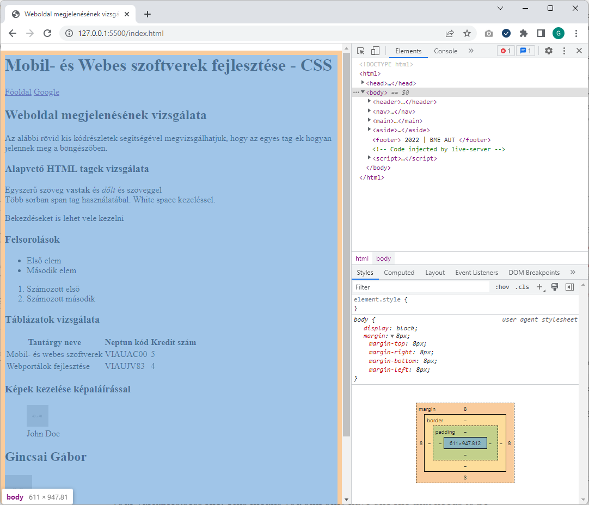
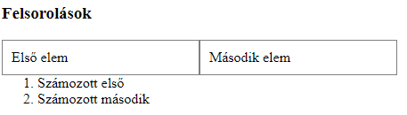
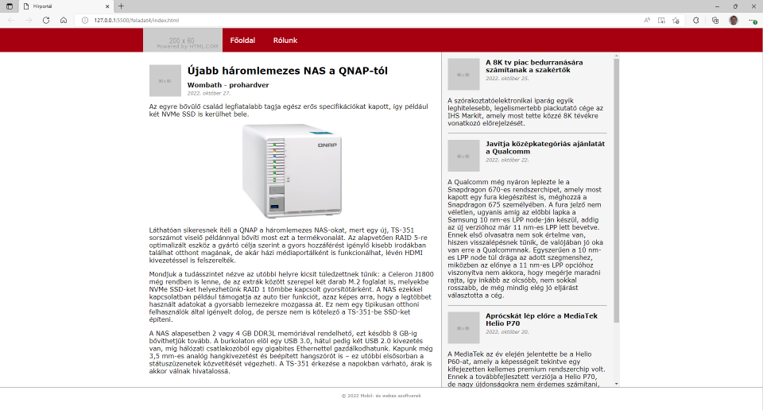

Labor 09 - CSS¶
Bevezetés¶
A labor során laborvezetői segítséggel, majd önállóan készítesz el feladatokat a webes technológiák gyakorlati megismerése érdekében.
A labor célja, CSS alapjainak elsajátítása és a CSS debuggolására használt eszközök gyakorlása.
Előkészület¶
A feladatok megoldása során ne felejtsd el követni a feladat beadás folyamatát Github.
Git repository létrehozása és letöltése¶
- Moodle-ben keresd meg a laborhoz tartozó meghívó URL-jét és annak segítségével hozd létre a saját repository-dat.
- Várd meg, míg elkészül a repository, majd checkout-old ki.
- Egyetemi laborokban, ha a checkout során nem kér a rendszer felhasználónevet és jelszót, és nem sikerül a checkout, akkor valószínűleg a gépen korábban megjegyzett felhasználónévvel próbálkozott a rendszer. Először töröld ki a mentett belépési adatokat (lásd itt), és próbáld újra.
- Hozz létre egy új ágat
megoldasnéven, és ezen az ágon dolgozz. - A neptun.txt fájlba írd bele a Neptun kódodat. A fájlban semmi más ne szerepeljen, csak egyetlen sorban a Neptun kód 6 karaktere.
1. Feladat¶
Stíluslapok, inline stílusok¶
Webes HTML tartalmak stílusozására CSS-t használunk. A CSS alapjai:
- szabály (mintaillesztés) alapú, deklaratív programozási nyelv,
- DOM elemekhez megjelenést rendel.
A böngészőben megjelenített HTML tartalmak alapértelmezés szerint formázatlanok, viszont bizonyos szabályokat a böngésző alapértelmezetten illeszt az egyes elemekre, az elem típusa szerint.
Vizsgáljuk meg, milyen szabályokat illeszt a böngésző a HTML, a BODY, a DIV, a SPAN, a H1, H2 és egyéb elemekre!
Nyissuk meg a Visual Studio Code-ban a leklónozott repositorynkat, és a gyökér könyvtárba található index.html fájlba dolgozzunk.
Ahhoz, hogy böngészőben is lássuk a weboldalt az index.html-en kattintsunk jobb gombbal és válasszuk az Open with Live Server opciót, ami elindítja a fejlesztői webszervert és az alapértelmezett böngészőben megnyitja az oldal.
Vegyük észre, hogy az oldalhoz nem vettünk fel saját stíluslapot, valamilyen formázás mégis érvényesült. Egyes elemek félkövérek, kisebbek-nagyobbak, elrendezésük sorfolytonos vagy tördelt.
Vizsgáljuk meg, milyen szabályok érvényesülnek az egyes elemekre!
Nyissuk meg a böngésző beépített fejlesztői eszközeit (F12)! Lehetőségünk van az elemeket kijelölni (Jobb klikk > Inspect), megnézni elhelyezkedésüket a felületen és a DOM szöveges reprezentációjában egyaránt.

Fontos
A böngészők és/vagy bizonyos szerverek túl agresszívan gyorsítótárazhatnak bizonyos fájlokat, pl. a HTML és CSS fájljainkat, így a változásokat nem biztos, hogy látni fogjuk egyszerű újratöltés után. Ha ez előfordul, a cache letiltásához a Developer Tools eszköztáron ki kell kapcsolnunk a cache-t.
Jellemzően a menüsor bal oldalán találhatók a kijelöléshez szükséges műveletek ikonjai, jobb oldalon a részletes nézet.
A kiválasztott elemhez a jobb oldali Computed fülön a ténylegesen érvényre lépett szabályokat láthatjuk. Mivel nincs explicit CSS fájlunk linkelve és CSS szabályokat sem írtunk a HTML-ben, ezért kizárólag a böngésző beépített user agent stylesheet-je érvényesül. Itt láthatjuk a CSS Box model-t is, ami az elem tartalma, a hozzá tartozó padding, border és margin értékek egymásra halmozását jelenti a 2 dimenziós téglalap oldalaihoz mérten.
A CSS feloldásában a cascading, azaz "egymásba ágyazható" rész szerint több stíluslap létezik a származás szempontjából; mi most a böngészőbe beépített, ún. user agent stylesheet-et látjuk.
A Computed fülön lenyitva az egyes szabályokat látható, hogy honnan származik az a stílus, sőt az is, hogy egy érték beállítása pontosan melyik szabályból származik, azaz melyik szabály melyiket írta felül.

A fenti szűrőt használva van lehetőségünk az alkalmazott CSS szabályok között keresni is.
A h1, h2 és b elemek alapértelmezetten félkövérek, ezt a font-weight: 700; tulajdonság írja le nekünk.
A html, body, div, h1, h2 elemek display tulajdonsága block, a span, a és b elemek pedig inline típusúak. A display: block; tulajdonságú elemek egy blokkot (sort) foglalnak el az őket befoglaló elemben, az inline típusúak sorfolytonosak (egymás mellett is elhelyezkedhetnek).
Láthatjuk, hogy a body elemen található 8px margó (margin) mind a 4 irányban:

Beadandó¶
1. feladat beadandó (0.5 pont)
Egy-egy képernyőképpel alátámasztva demonstrálja az alábbi kérdéseket:
- Mekkora a margin, padding és border értéke az
<ol>elemnek? - Hány pixel a (függőleges) távolság a
<h1>és<h2>elemek tartalma között (ügyelve az átfedő margókra)? - A készített képernyőképet másold
f1-1.pngésf1-2.pngnéven a repository gyökerébe!
2. Feladat¶
Megjelenés módosítása futási időben¶
Emlékeztető a CSS szabályok definiálásához
Saját CSS szabályokat többféle módon tudunk az oldalunkhoz rendelni:
- CSS fájlokra történő hivatkozással,
- CSS szabályok felvételével a HTML tartalmán belüli
<style>tagben, - inline, a HTML elemek
styleattribútumának beállításával.
Ütköző CSS szabályok közül az érvényesül, amelynek nagyobb a specificitása (megegyező specificitás esetében az utoljára definiált).
Emlékeztetőként a szabályok specificitási sorrendje:
- inline stílus (
<div style="...">), - ID-k száma (
#azonosito), - osztályok, attribútumok és pszeudo-osztályok száma (
.osztaly,[attributum],[attributum="ertek"],:hover), - pszeudo-elemek (
:before,:after).
A sorrendhez hozzátartozik az !important kulcsszó, ami önmagában a fentiektől specifikusabb, viszont az !important szabályokra a fenti specificitási sorrend szintén érvényesül.
A szabályok definiálása:


- Ha új szabályt akarunk felvenni, akkor a kapcsos zárójelek közé kattintva tehetjük ezt meg, ezután az automatikus kiegészítés funkcióval láthatjuk az összes, a böngésző által ismert CSS tulajdonságot (Firefox Developerben ezt az üres kurzoron a fel-le nyilak-kal tehetjük meg, Edge-ben és Chrome-ban a Ctrl+szóköz-zel).
-
Vegyük fel a
<h1>elemhez az alábbi CSS tulajdonságot:color: red; -
Közben vegyük észre a DOM reprezentációban, hogy bár a jobb oldali panelen szerkesztünk, pontosan ugyanaz történik, mintha a HTML elem
styleattribútumát adtuk volna meg. - Ha beállítjuk a
font-weight: bold;tulajdonságot a<body>-n, akkor láthatjuk, hogy az összes gyermekére is érvényesül a szabály. Bizonyos szabályok öröklődnek (afont-weightilyen), mások (például apaddingésmargin) viszont nem.
Lehetőség van esetenként több szabály aggregált megadására is ún. shorthandek használatával. Gyakori például a 4-irányú értékadás, ami a top-right-bottom-left iránysorrend szerint ad meg több értéket.
- A
padding: 50px 30px 10px 5px;szabály mind a négy értéket beállítja a fenti sorrendben. - A
padding: 10% 1mm;szabály a fenti-lenti értékeket 10%-ra, a jobb-balt 1 mm-re. - A
padding: 0;mind a 4 oldalon 0-ra állítja a paddingot (nem szükséges mértékegység 0 esetén).
Fontos
Ha százalékban adjuk meg a paddingot vagy a margót akkor az a szülő elem szélességének a százalékát jelenti. Még akkor is ha margin-top, vagy margin-bottom-ot állítunk be!
Forrás: https://www.w3.org/TR/CSS21/box.html#margin-properties
Inline stílusok
Inline stílusokat csak kivételes esetekben használjunk, jellemzően programozottan (JavaScriptből) elfogadott lehet egy elem megjelenését ilyen módon állítani, de a nyers HTML-ben nem!
-
Vegyünk fel egy új szabályt, amiben megadjuk, hogy a táblázat cellák
tdpaddingja 1rem legyen minden irányba. Ehhez a Syles fülön a jobb oldalon található + jelre kell kattintani és akkor létrejön egy új szabály ahol megadhatjuk a selectort és a beállításokat is.td { padding: 1rem; }
Új szabály létrehozása -
Az új szabály mellett azt látjuk, hogy az inspector-stylesheet-ben jött létre. Tehát a háttérben a böngésző létrehoz egy CSS fájlt és abban tárolja a létrehozott stílusokat, amit meg is tudunk nézni ha rákattintunk az inspector-stylesheet-re.
- Az így létrehzott szabályok csak az oldal újratöltéséig maradnak meg.
- Figyeljük meg a fenti képernyőn, hogy az új szabállyal nem egy cellára állítottuk be a padding-ot hanem minden cellára.
- Az új szabály alatt egyébként látható a user agent styleheet-ből érvényre jutott szabályok is, illetve ez alatt az örökölt szabályok is.
Beadandó¶
2. feladat beadandó (0.5 pont)
- Hozz létre egy új szabályt a
table-re ahol beállítod az alábbi szabályttable { border: solid 1px red; border-collapse: collapse; } - Hozz létre egy új szabályt, amiben a
thtagekre beállítod, hogy a háttérszín fekete legyen, a betű színe fehér, a padding pedig 1rem. - Az első sor utolsó cellájának tartalmát (de csak azt az egyet) igazítsd középre. Tipp:
text-align: center - Készíts egy képernyőképek amin látható az összes fenti módosítás és a készített képernyőképet másold
f2.pngnéven a repository gyökerébe!
3. Feladat - CSS alapok¶
A HTML oldalhoz kétféle tudunk stíluslapot rendelni: külső CSS fájlból vagy az oldal head tagjében definiált <style> tagben.
Float használata¶
Az index.html forráskódját egészítsük ki, a <head> elembe helyezzük el az alábbi kódot:
<style>
ul {
list-style: none;
padding: 0;
}
ul > li {
float: left;
padding: 10px;
min-width: 200px;
border: 1px solid grey;
}
</style>
Ha frissítjük az oldalt (nem szükséges újraindítani a szervert, csak menteni a fájlt), akkor az elrendezés módosul.
- A listaelemet jelző pötty eltűnik.
- A listánkban a listaelemek egymás mellé kerülnek
- A felsorolás után következő elem felcsúszott a listával egy sorba.

float: left
A float: left; tulajdonság állításával nem ugyanazt érjük el, mintha a listaelemet display: inline-block;-ra állítanánk, mert az inline-block megtartja az egymást követő elemek közötti whitespace-eket, a float: left; viszont nem.
A float segítségével komplexebb elrendezéseket is el tudunk érni, viszont a float-olást meg kell tudnunk szüntetni. Ehhez a clear: both; értéket állíthatjuk be egy elemen. A float-olás azon kevés CSS tulajdonság egyike, ami az elemet sorban követő további testvérekre is közvetlenül hat.
Az alábbi szabályt használhatjuk a float-olás megszüntetéséhez, ekkor az <ol> elemre a clearfix osztályt alkalmazva az már új sorba is kerül.
.clearfix {
clear: both;
}
<ol class="clearfix">
<!-- ... -->
</ol>

Vegyük észre, hogy az oldal alján is volt egy felsorolás, és sajnos olyan általános szabályt sikerült íni, hogy az ott lévő felsorolásra is érvényre jutott.

Specifikus szabályok¶
A CSS szabályainknak az esetek nagy többségében nem tesz jót, ha túl általánosak. A fenti szabályok minden listaelemre általánosan illeszkedni fognak, ami ebben a konkrét esetben nem jó döntés, ugyanis valahol az oldal törzsében lehet, hogy szeretnénk használni a "klasszikus" listás megjelenítést is. Ezért a szabályunkat át kell gondolnunk, specifikusabb szabályt érdemes írni:
ul.menu {
list-style: none;
padding: 0;
}
ul.menu > li {
float: left;
padding: 10px;
min-width: 200px;
border: 1px solid grey;
}
A fenti osztállyal megkülönböztettük a menu osztállyal ellátott ul elemeket azoktól, amiken nincs rajta az osztály.
Pszeudo osztályok¶
A pszeudoosztályok használatával az elemek különböző állapotainak különböző stílust tudunk adni. Ha a listaelemek kijelölése a felhasználó számára speciális állapot, ezt érdemes jeleznünk a felületen. Használjuk az alábbi szabályt:
ul.menu > li:focus {
font-weight: bold;
color: #44AA44;
}
Önmagában a focus pszeudoosztály használata nem elegendő, ugyanis a li elem nem fókuszálható. A <li> elemen elhelyezett tabindex attribútum jelzi a böngészőnek, hogy az elem képes fókuszt kapni:
<ul class="menu">
<li tabindex="1">Első elem</li>
<li tabindex="2">Mádosik elem</li>
</ul>
Ezután lehetséges az egér kattintással vagy a Tab billentyű használatával kijelölni az elemet.
CSS külön fájlban¶
A HTML-be ágyazott CSS-sel a probléma, hogy ugyanaz a stílus nem újrahasznosítható a különböző oldalaink között. Ezért érdemes kiszervezni a CSS tartalmainkat a saját dedikált CSS fájljainkba. A CSS tartalmát mozgassuk át a HTML <head> részéből egy új fájlba az index.html mellett, legyen a neve index.css.
A fájlt a HTML-ből az alábbi módon tudjuk linkelni: tegyük az oldal <head> részébe (a korábbi oldalon belüli stílus-definíciók helyére) az alábbi hivatkozást:
<link rel="stylesheet" type="text/css" href="index.css">
Reszponzív elrendezés¶
A weboldalakat különböző képernyőméretű és felbontású eszközökről szoktuk látogatni. A túl részletes táblázatok, hosszú, meg nem törő sorok nem felhasználóbarátak kisebb méretű kijelzőkön, még ha az eszköz felbontása kellően nagy is. A mobil eszközök ezért szorzókat alkalmaznak a valós és a hasznos felbontás közötti megkülönböztetésképpen.
A reszponzív elrendezés során a legfontosabb koncepciók közé tartozik a szélesség függvényében történő átméretezése az oldalnak. Ezeket az alábbi szintaxis alapján, ún. media query-vel tudjuk implementálni:
.medium-only {
display: none;
}
@media (min-width: 768px) and (max-width: 991px) {
.medium-only {
display: block;
}
}
A fenti szabály 768 és 991 pixel közötti szélességű viewport-on jelenik meg, tehát nem a képernyő mérete, hanem a rendelkezésre álló hely függvényében változik (pl. ablak átméretezésekor is). A medium-only osztállyal ellátott elemek csak ilyen képernyőméreten jelennek meg, ugyanis a media query szabály specifikusabb, mint az azon kívül definiált.
Próbáljuk ki, mi történik, hogyha a két szabály sorrendjét felcseréljük!
Beadandó¶
3. feladat beadandó (1 pont)
-
Commitolja a módosított HTML fájlt és a létrehozott CSS fájlt a repositoryba!
-
Készítsen képernyőképet
f3-1.pngnévvel és másolja a repository gyökerébe, amin az egyik listaelem kijelölt állapotban van. A képernyőképen az érvényre jutott CSS szabály is legyen látható. (Styles a dev toolbarban). -
Képernyőképekkel demonstrálja, hogy a fenti szabályt a table elemre alkalmazva a táblázat az ablak méretének függvényében látható vagy el van rejtve!
f3-2.png,f3-3.png
4. Feladat¶
Mostantól a Feladat4 mappában lévő állományokkal dolgozz.
Készítsd el az alábbi ábrán látható HTML oldal designját. Figyelj rá, hogy a megvalósítás során nem alkalmazhatsz inline stílusokat, és kerüld a HTML fájl módosítását.


4.1 Layout vizsgálata¶
Az oldalnak az alapvető elrendezése már elkészült, melyhez a formázások a css/main.css fájlban találhatók, melyekből a lefontosabbakat tekintük is át.
- A
htmlésbodytagen nincs margin és padding sem és itt adtuk meg a betűtípust is. - A hivatkozások
atagek nincsennek aláhúzva. - Van egy
.containerCSS osztály, amiben megadtuk, hogy a tartalmi rész 1200px széles legyen és középre igazítottuk.- Itt a
margin-left: autoésmargin-right: autosegítségével igazítjuk a tartalmat középre. - Figyeljük meg, hogy a
position: relativebeállítás is szerepel, hogy az abszolút pozícionált elemek ehhez képest legyenek igazítva.
- Itt a
- Mivel fix fejlécet szeretnénk ezért a fő tartalmi részre
maintag beállítottunk egy 76px-es paddingot. 60px a fejléc magassága és 16px távolságot szeretnénk a fejléc és a tartalmi rész között. - Az
asidejobb oldalra van igazítva.- Mivel a végső cél az, hogy teljesen függetlenül tudjuk görgetni és akor is teljes magasságú legyen ha a mellette lévő fő tartalmi rész kevés, ezért
position: absolutesegítségével pozítionáljuk acontainertetejékez és jobb oldalra (top: 60pxésright: 0). - Ezen felül megadtuk, hogy 450px széles legyen, a hátterét és egy bal oldali margót.
- Mivel a végső cél az, hogy teljesen függetlenül tudjuk görgetni és akor is teljes magasságú legyen ha a mellette lévő fő tartalmi rész kevés, ezért
- A láblécben lévő szöveget középre igazítottuk, kapott egy első margót és a betű színe és mérete is beállításra került.
Mint láthatjuk tényleg van egy alapvető beállítás, de nagyon sok formázást még be kell állítani, hogy elérjük a kívánt eredményt.
4.2 Fejléc¶
A fejléc megjelenését a navbar.css fájlba készítsd el, amit megtalálsz a repository feladat4/css könyvtárában.
A fejlécnek így kell kinéznie

A logó mellett két elemből álló menüsor található, ahol az elemek átnavigálnak rendre az index.html és contact.html oldalakra az aktuális oldalról, megnevezésük: Főoldal, Kapcsolat (ezeket az oldalakat nem kell elkészíteni)!
- A menüsort
<ul>és<li>elemek használatával strukturáld. (Tipp:display: inline-block) - A menüpontok betűmérete 1.1em legyen, előtérszíne fehér. Az egeret a menüpontra helyezve (Tipp:
:hoverpszeudoclass) a háttérszín legyen szürke. - A menüpontok szövege legyen függőlegesen középre igazítva. (Tipp:
line-height) - Ügyeljen rá, hogy görgetéskor a tartalom ne takarja ki a menüsort! (Tipp:
z-index)
Megvalósítás lépései¶
-
A fejléchez alapvető kinézetének beállítása.
- Készíts egy
.page-headerCSS osztályt amit tegyél rá az elsőheadertagre. - A page-header CSS osztályban az alábbiakat állítsd be:
- Legyen 100% széles
- A magassága 60px legyen
- A háttér legyen bordó
- A fejléc legyen fix (nem tűnik el, ha kigörgetünk a tartalomból)
- Mivel fix a fejléc ezért be kell majd állítani, hogy a fő tartalmi blokk lentebb kezdődjön. Most rálóg és ha majd padding-ot állítunk be akkor is rá fog lógni, tehát be kell állítani, hogy a fejléc legyen fentebb, mert egyébként nem fogja érzékeli ha fölé visszük az egeret. Tipp:
z-index
Segítség
A fenti beállításokhoz az alábbi CSS osztályt kell létrehozni.
header.page-header { width: 100%; height: 60px; background-color: #A60010; position: fixed; z-index: 1; } - Készíts egy
-
Fejlécen belüli layout kialakítása.
- Készíts egy
.logoCSS osztályt, amit rendelj a fejlécben lévő képhez. - A CSS osztályan igazítsd balra a képet úgy, hogy mellé fel tudjon csúszni felsorolás.
Segítség
A fenti beállításokhoz az alábbi CSS osztályt kell létrehozni.
.logo { float: left; } - Készíts egy
-
A navigációban lévő linkből menüpont készítése.
- Ne hozz létre CSS osztályt, hanem a HTML tagekhez rendeld a szabályokat.
- Csak a nagigáción belüli felsorolás nézzen így ki.
- Az
ultagre állítsd be, hogy ne legyen margó és ne legyenek előtte pöttyök - Az
litagekre állítsd be, hogy egymás mellé kerüljenek (inline-block), legyen köztük 40px távolság és függőlegesen középre legyenek igazítva.
Segítség
- Két szabályt kell létrehozni
nav ulésnav ul li - A felsorolás pöttyeit az
ul-en lehet megadni alist-stylesegítségével - Az
li-ketinline-block-ként érdemes megjeleníteni - Az egyes elemek közötti távolságokra a
padding-ot érdemes használni. - Függőleges igazításhoz a
line-height-t kell beállítani a fejléc magasságára. (60px)
-
Navigációs linkek színének beállítása
- A fejlécben lévő navigációs linkek legyenek fehér színűek, a betűméter pedig 1.1em
- Ha egy menupont (link) fölé visszük az egeret, akkor a betű színe legyen szürke.
Beadandó¶
4. feladat - Fejléc beadandó (1 pont)
Commitolja a index.html és navbar.css fájlokat a repositoryba!
Demonstrálja képernyőképpel a megoldást! f4-2.png
4.3 Fő hír megjelenítése¶
A fő hír megjelenését a news.css fájlba készítse el, amit először létre kell hozni. (A HTML oldal már hivatkozik rá.)

A kezdőoldalon a legfrissebb hír jelenik meg.
-
A hírnek van egy fejléce amiben megtalálható a szerző profil képe, cím, szerző és a publikálási dátum. Ezeket a csatolt képernyőkép alapján rendezze és formázza!
- A szerző profil képe
- 80px x 80px legyen. Akkor is állítsuk ezt be a CSS-ben ha a kép pont ekkora.
- Igazítsuk balra, hogy a cím, szerző és dátum mellé kerüljön.
- A kép és a szöveg között legyen 1rem távolság.
- A címnek csak alsó margója legyen
.75rem - A név legyen félkövér és az alsó paddingja
.25rem - A pulbikálás dátuma legyen szürke, dőlt betűvel és a betűmérete legyen
.75rem
- A szerző profil képe
-
Állítsd be, hogy a hír elem 1rem távolságot tartson a befoglaló elemektől. (Tipp:
padding) - A hír törzse egy bevezető, kép majd további tartalomból áll.
- A hírhez tartozó képek legyen középre igazítva. Ehhez a beállítást az
.imageCSS osztályon érdemes beállítani. -
Egy kép maximálus szélessége 250px legyen, de csak azok, amik az
.imagesalatt vannak. -
Állítsd be, hogy a fő tartalmi rész
maintag szélességét úgy, hogy ne lógjon be az oldalsó hasáb alá, de úgy, hogy reszponzív maradjon. Mivel ez a módosítás a layoutot érinti ezért amain.css-be végezd el.
Segítség
- Az egyik megoldás, hogy a fő tartalmi rész
maintagre beállítasz egy jobb oldali margót, ami éppen akkora mint a jobb oldali hasáb, így az oldalsó sáv csak a margót fogja kitakarni. - A másik megoldás, hogy a szélsség megadásánál a
calcsegítségével ki lehet számolni, hogy a teljes szélességből adott pixelt levonva mennyi hely marad. Ezt a böngésző rendereléskor mindig újraszámolja. Azért kell ilyen megoldást választani, mert a jobb oldali hasáb abszolút pozícionált, így nekünk kell figyelni arra, hogy te takarjon ki semmit se.- Így a
width: calc(100% - 450pxtűnik a jó választásnak, mert 450px széles a jobb oldali hasáb.
- Így a
- Ellenőrizzük, hogy tényleg helyes értéket állítottunk-e be, mert a jobb oldali hasáb szélessége attúl függ, hogy milyen box model van rajta beállítva. Most a jobb oldali hasáb szélessége 450px + a padding. Állítsd át a box modellt úgy, hogy a padding nem számolódjon bele. Tipp:
box-sizing
Beadandó¶
4. feladat - Hír szövege beadandó (1 pont)
Demonstrálja képernyőképpel a megoldást! f4-3.png
4.4 Oldalsó sáv¶
Az oldalsó sáv megjelenítését is a news.css fájlba készítsd el.

- Az oldalsó sávban lévő cikkek címének betűmérete legyen
1rem, és az alsó margója legyen.5rema többi legyen0. - Készíts CSS szabályt, hogy az egyes hírek között (csak ami az oldalsó sávban van) legyen egy elválasztó vonal és
1remtávolság a következő elemtől. -
Az utolsó hír után viszont már ne legyen elválasztó vonal (Tipp:
:last-child) -
Állítsd be, hogy a jobb oldali hasáb a rendelkezésre álló teljes magasságot töltse ki. Mivel ez is layout beállíás ezért a
main.css-be állítsd be azasidetagen.- A magasságot a
calcsegítségével lehet kiszámolni, de ez robosztusság szempontjából azért nem a legjobb megoldás, mert ha változik a fix rész (fejléc, lábléc, margók...) akkor módosítani kell ezt a szabályt is. - A másik megoldás egy jelenleg experimental fázisban lévő megoldás használata. Hivatalosan a
height: stretchérték lenne, de ez még ezen a néven nem támogatott. Viszont a Chromium alapú böngészők aheight: -webkit-fill-availablenévvel támogatják. Ez a beállítás azt jelenti, hogy az elem magassága annyi legyen amennyi hely rendelkezésre áll. (Részletek a támogatottságról: https://caniuse.com/mdn-css_properties_height_stretch) - Ezen felül még be kell állítani, hogy a szöveg ne lógjon ki az elemből, azaz automatikusan jelenjen meg a scroll, ha szükséges.
- A magasságot a
Beadandó¶
4. feladat - Oldalsó sáv beadandó (1 pont)
Demonstrálja képernyőképpel a megoldást! f4-4.png
IMSc Beadandó¶
4. feladat - Oldalsó sáv beadandó (1 IMSc pont)
- Ha az oldalsó hír címe rövid, akkor a tartalmi rész felcsúszik alá a
floatmiatt. Készítsd szabályt, ami a HTML módosítása nélkül az oldalsó sávban lévő hírek fejléce után törli a floatolást. - Használt a
::after-t a megoldáshoz Demonstrálja képernyőképpel a megoldást!f4-4-iMsc.png
4.5 Reszponzivitás¶
Egészítse ki a main.css fájlt úgy, hogy ha 900px-nél kisebbre állítjuk az ablakot, akkor a jobb oldali sáv tűnjön el, és a teljes oldalt a fő hír foglalja el. (Tipp: @media( max-width: 900px ))
Tippek a megoldáshoz
- Használja a böngésző DOM vizualizáló eszközt, így láthatja, hogy a kijelölt elemre milyen CSS szabályok illeszkednek, így könnyen kideríthatő, hogy kisebb ablak méretnél mit kell módosítani.
- A megoldás attól függ, hogy szélességet, vagy margót állítottál annak érdekében, hogy a jobb oldali hasáb ne takarja ki a tartamat, hiszen pont ezt az értéket kell majd átállítani ha nem látszódik a jobb oldali hasáb
- Elsőként el kell rejteni a teljes jobb oldali hasábot.
- Be kell állítani alapértelmezettre a szélességet / jobb oldali margót, hogy ha nem látszódik a jobb oldali hasáb, akkor a teljes képernyőt kitöltse a fő tartalmi rész.
@mediaquery-ket azandés azorlogikai operátorokkal tud egymás után fűzni, pl.@media screen and (min-width: 200px) {...}, negálni anotkulcsszóval lehetséges, bár ebben a megoldásban erre nem lesz szükség.
Beadandó¶
4 Feladat - Reszponzivitás beadandó (0.5 pont)
Demonstrálja képernyőképpel f4-5.png, hogy 900px alatt nem látszódik a jobb oldali hasáb.
Létrehozva: October 28, 2017